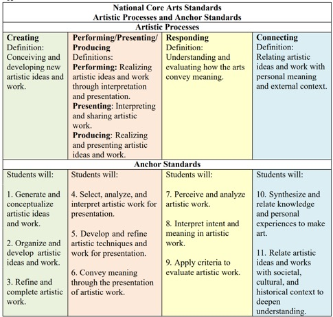

|
ARTS 1311│Section 1 │ONLINE CLASS May 28 – June 28 |
|||
|
Professor: |
Amanda Boyaki Wilson, Ph.D. “Dr. B” |
Email: |
Aboyaki@na.edu
|
|
Semester:
|
Summer Session 1 2024
|
Office Hours: |
By Email – see above or 832-230-5083 |
|
I check emails every day; however, you can expect a response from me within 48 hours. Emails after 5pm Friday will be answered Monday at the latest. |
TEAMS MEETINGS LINKS WILL BE
EMAILED |
||
First Day of Class May 28
Last Day to Drop June 7
Last Day to Drop with a “W” June 14
Last Day of Class June 25
Live Class Meetings - Week 1: Tuesday, May 28
Week 2: Tuesday, June 4
Week 3: Tuesday, June 11
Week 4: Tuesday, June 18
Week 5: Tuesday, June 25
A general introduction to the visual arts designed to create an appreciation of the vocabulary, media, techniques, and purposes of the creative process. Students will critically interpret and evaluate works of art within formal, cultural, and historical contexts. Students will create original works of art in a variety of media. (ACGM)
Credit Hours
3 Credit Hours | 45 hours per semester Semester Credit Hour Definition:
The minimum amount of time for a one-credit-hour course per semester equals 50 minutes per week for 15 weeks of engaged learning plus one week for final examinations or other methods of assessment. A credit hour is an amount of work represented by intended learning outcomes and verified by evidence of student achievement, for the various modes of instruction offered at North American University. Therefore, a 3 semester-credit-hour course contains at least 45 hours of engaged learning time (i.e. instruction/student engagement/educational experience) for 15 weeks.
The unit of measurement for academic work is the credit hour. One academic semester credit hour is equal to a minimum course time of:
(A) 15 hours of classroom lecture
(B) 30 hours of laboratory experience
(C) 45 hours of internship/externship/practicum
This course is an online asynchronous course: In order to complete this course successfully students need access to a computer and the Internet daily. This course is Online and does not require you to meet physically for the five required meetings that will be posted on J1 Portal. These class meetings will be sent by TEAMS link so that students may attend class online. In order to access J1 eLearning Portal, please click MyPortal app on your Office365 portal. For J1 eLearning Portal and course related issues, please contact with Distance Education Support via one of the following methods:
• Visit Room 732 • Call 832-464-869
This course requires a webcam and a built-in microphone to attend web conferences. This course requires submitting assignments in Microsoft Office or Adobe Acrobat (pdf) file formats. Assignments created using other applications, such as Google Documents, Microsoft Works, or WordPerfect, are unacceptable.
The learning outcomes for this course are developed from the four categories of the National Core Art Standards available from the National Art Education Association and contain the standards that are applied to each of the three categories of assignments that are required of this course and measured through rubrics designed from these categories and standards. The four categories and standards are as follows:
Upon completion of this course, students will:
· Apply art terminology as it specifically relates to visual art.
· Demonstrate knowledge of art elements and principles of design.
· Differentiate between the processes and materials used in the production of various works of art.
· Critically interpret and evaluate works of art.
· Demonstrate an understanding of the impact of arts on culture.

Additionally, the rubrics for this course are aligned with the four categories of the Texas Essential Knowledge and Skills for the Fine Arts (referred to hereafter as TEKS) standards issued under the Texas Education Code and will also be utilized. The TEKS standards are applied to the three categories of assignments required inthis course. These four basic strands are--foundations: observation and perception; creative expression; historical and cultural relevance; and critical evaluation and response--provide broad, unifying structures for organizing the knowledge and skills students are expected to acquire.
Texas Essential Knowledge and Skills §117.305 adopted to be effective July 28, 2013, 38 TexReg 4575:
1. Foundations: observation and perception. The student develops and expands visual literacy skills using critical thinking, imagination, and the senses to observe and explore the world by learning about, understanding, and applying the elements of art, principles of design, and expressive qualities. The student uses what the student sees, knows, and has experienced as sources for examining, understanding, and creating original artwork. The student is expected to:
A. consider concepts and themes for personal artwork that integrate an extensive range of visual observations, experiences, and imagination;
B. compare and contrast the elements of art, including line, shape, color, texture, form, space, and value, as the fundamentals of art in personal artwork;
C. compare and contrast the principles of design, including emphasis, repetition/pattern, movement/rhythm, contrast/variety, balance, proportion, and unity, in personal artwork; and D. discriminate between art media and processes to express complex visual relationships such as content, meaning, message, and metaphor using extensive art vocabulary.
2. Creative expression. The student communicates ideas through original artworks using a variety of media with appropriate skills. The student expresses thoughts and ideas creatively while challenging the imagination, fostering reflective thinking, and developing disciplined effort and progressive problem-solving skills. The student is expected to:
A. produce an original body of artwork that integrates information from a variety of sources, including original sources, and demonstrates sustained self-directed investigations into specific themes such as a series or concentration of works;
B. evaluate and justify design ideas and concepts to create a body of personal artwork;
C. use an understanding of copyright and public domain to appropriate imagery constituting the main focal point of original artwork when working from images rather than direct observation or imagination;
D. create original artwork to communicate thoughts, feelings, ideas, or impressions;
E. collaborate to create original works of art; and
F. create artwork, singularly and in a series, by selecting from a variety of art materials and tools appropriate to course work in drawing, painting, printmaking, sculpture, ceramics, fiber art, design, digital art and media, photography, jewelry, and mixed media.
3. Historical and cultural relevance. The student demonstrates an understanding of art history and culture by analyzing artistic styles, historical periods, and a variety of cultures. The student develops global awareness and respect for the traditions and contributions of diverse cultures. The student is expected to:
A. research and report on selected historical periods, artists, general themes, trends, and styles of art;
B. analyze and evaluate the influence of contemporary cultures on artwork;
C. collaborate on community-based art projects; and
D. examine, research, and develop a plan of action for relevant career or entrepreneurial art opportunities within a global economy, justifying the choice.
4. Critical evaluation and response. The student responds to and analyzes the artworks of self and others, contributing to the development of the lifelong skills of making informed judgments and reasoned evaluations. The student is expected to:
A. develop evaluative criteria to justify artistic decisions in artwork such as that in museums, local galleries, art exhibits, and websites based on a high level of creativity and expertise in one or more art areas;
B. evaluate and analyze artwork using a method of critique such as describing the artwork, analyzing the way it is organized, interpreting the artist's intention, and evaluating the success of the artwork;
C. analyze personal artwork in order to create a written response such as an artist's statement reflecting intent, inspiration, the elements of art and principles of design within the artwork, and the measure of uniqueness;
D. use responses to artwork critiques to make decisions about future directions in personal work;
E. construct a physical or electronic portfolio by evaluating and analyzing personal original artwork to provide evidence of learning; and
F. evaluate a wide range of artwork to form conclusions about formal qualities, aesthetics, historical and cultural contexts, intents, and meanings.
Through the core curriculum, students will gain a foundation of knowledge of human cultures and the physical and natural world; develop principles of personal and social responsibility for living in a diverse world; and advance intellectual and practical skills that are essential for all learning.
THECB Core Objectives
· Critical Thinking Skills - to include creative thinking, innovation, inquiry, and the analysis, evaluation, and synthesis of information.
· Communication Skills - to include effective written, oral, and visual communication.
· Teamwork - to include the ability to consider different points of view and to work effectively with others to support a shared purpose or goal.
· Personal Responsibility - to include the ability to connect choices, actions, and consequences to ethical decision-making.
· Social Responsibility (Lit Only)—to include the ability to connect choices, actions, and consequences to ethical decision- making
All required Core Objectives will be assessed for all courses offered as part of the Core Curriculum; optional Core Objectives may be assessed at faculty discretion, and will be considered in program-level reviews of institutional effectiveness relating to the delivery of instruction.
Art Appreciation | OER Commons (texas.gov) = The link is here.
Art Appreciation Arts 1301
Christopher Gildow, Lumen Learning and Wendy Riley
Art Materials:
Paper – white printer paper is required DO NOT submit any artwork on lined notebook paper it will result in an automatic zero.
Pencil – please avoid mechanical pencils they are not the best tool for your artwork.
Eraser – I recommend Pink Pearl but you will need an eraser, the one on the end of your pencil will not suffice, you will be using it as a tool to blend as well as remove marks.
Camera or some method to take photos and upload to the Portal.
Markers – any kind will do.
Black Sharpie markers – fine point and broad tip
Ruler
● Studio Art Assignments
● Presentation – My Hometown
● Discussion Forums – one per week of the course 4 in total.
● Class Meetings and Lectures – will be recorded. Students are expected to attend.
Regular & Substantive Interaction (RSI)
New federal US Department of Education (DoE) regulatory definitions of distance education require that institutions ensure regular and substantive interaction (RSI) between a student and an instructor(s). * Effective as of July 1, 2021. NAU requires instructors to fulfill all five bullets/categories of RSI below.
In this course, regular and substantive interaction will take place in the following ways:
RSI 1. Graded Assignments with Feedback.
RSI 2. Weekly communications explaining course content.
RSI 3. Weekly video lectures and discussions.
RSI 4. Office hours via TEAMS or by contacting me though my email aboyaki@na.edu or my
office number 832 230-5083.
RSI 5. Instructor initiated discussions.
|
Assessments and Activity Categories |
Point Values |
|
Studio Art Assignments |
40% |
|
Presentation |
20% |
|
Discussion Forums/Participation |
40% |
|
|
Total: 100 % |
Grading Conversion Table
|
Point (or Percentage Achieved) |
Course Grade |
|
96-100 |
A |
|
91-95 |
A- |
|
86-90 |
B+ |
|
81-85 |
B |
|
76-80 |
B- |
|
71-75 |
C+ |
|
66-70 |
C |
|
61-65 |
D+ |
|
50-55 |
D |
|
Below 50 |
F |
Technology issues cannot be used as a reason for late assignments. You must have back-up plans for technology issues, such as technical problems with your computer, Internet server provider problems, power outages, etc. Do not wait until the last minute to upload an assignment. All assignments may be turned in early, and students are encouraged to do so. If I cannot open a file and ask you to resubmit it in a different format you must do so within the day, otherwise it will not be accepted.
Late work will be accepted for partial credit if and only if arrangements are made with the instructor prior to time due. I will only accept a late submission if you contact me in advance. Again, planning and scheduling will ensure all work is turned and readable by the due date.
*Please DO NOT email assignments, upload them to J1 E Learning. If J1 E Learning is unavailable, take a screen shot of the day and time you are attempting to post and attach as a photo file when your assignment gets uploaded. This way you don’t have to email me that J1 E Learning is unavailable. Don’t wait for the last minute, and it won’t be late.
The instructor will conduct 30 to 90 minutes webinar sessions every week. The webinars will include lecturing, reviewing course requirements, and answering students' questions. Participation is optional but will be graded. To get the full credit from the webinars:
Join the webinar, and type in your full name into the chat box, OR
Watch the recorded session on the course page and submit a summary of the webinar, a synopsis, in 100-150 words.
The first webinar will be held on Tuesday, May 28, 2024, at 1 p.m.
Webinar Schedule:
Webinar links will be posted on the course website. Microsoft Teams software/app will be used to participate in the webinar sessions. Please refer to our technical support website to get more technical information: http://www.na.edu/nau-distance-education/video-tutorials/
|
Webinar |
Date |
Time |
|
Session 1 |
Tuesday, May 28, 2024 |
1:00 p.m. |
|
Session 2 |
Tuesday, June 4 |
1:00 p.m. |
|
Session 3 |
Tuesday, June 11 |
1:00 p.m. |
|
Session 4 |
Tuesday, June 18 |
1:00 p.m. |
|
Session 5 |
Tuesday, June 25 |
1:00 p.m. |
Summative Assignment requirements and rubrics are available on J1 E Learning.
Students will explore a variety of art processes and materials during hands-on artmaking class sessions called studios. All studios and discussions about the readings are due on Friday nights at midnight with posts to your classmates due by Sunday nights at midnight for the duration of the session. Late posts will have points deducted but only for 48 hours, after which you will not be able to post or reply. Do not email me any files if the deadlines have passed. Your work must be turned into the Portal by the deadlines.
Art Studio #1 A. Assignment Self Portrait Series - Professional You. 5 points
Art Studio #1 B. Self Portrait with Objects/Still Life 5 points
Art Studio #2 A. Bird's Eye View PHOTOGRAPHS 5 points
Art Studio #2 B. Worm's Eye View PHOTOGRAPHS 5 points
Art Studio #3 Design Your Own Logo 10 points
Art Studio #4 Found Object Sculpture 10 points
Art Studio #5 Design Assignment – 10 points
Make Something Better
Example of Art Studio Formative Assessment Rubric (RSI 1,2,5). Each studio has a rubric that will be found on the J1 Portal.
|
Art Studio 1 Self Portrait- Professional You 10 possible points
|
Expert
|
Proficient |
Developing |
Inefficient |
No Submission. |
|
Backgrounds TEKS: 1 A-C, 2 A-F, 4 C, D & F 2 points |
Extensive work on background, excellent results. |
Thoughtful approach to background. |
Some attempt at background but is either distracting or needs attention. |
No attention to background. |
No Submission. |
|
Four Corners & Composition TEKS: 1 A-C, 2 A-F, 4 C, D & F 2 points |
Each corner is unique. |
Good work with corners. |
Some attempt at the corners. |
Needs attention. |
No Submission. |
|
Lighting TEKS: 1 A-C, 2 A-F, 4 C, D & F 2 points |
Considerable effort, lighting achieves highlights. |
Good effort. |
Attempt made at lighting but shadows are still considerable. |
Beginning process. |
No Submission. |
|
Clothing & Objects Appropriate for Assignment TEKS: 1 A-C, 2 A-F, 4 C, D & F 2 points |
Ready to upload to social media. Excellent attention to four corners, lighting, background and clothing. |
Strong attention to most of the details of photo. |
Some effort made but there is an issue - I will describe it. |
Minimal effort, photo needs attention to four corners with clothing and lighting issues. |
No Submission. |
|
Grammar/Spelling Description of Process TEKS: 4C 2 points |
Ready to upload to social media. Excellent attention to four corners, lighting, background and clothing. |
Fewer than 3 errors. |
Some effort made but there is an issue - I will describe it. |
Does not meet college level writing standards. |
No Submission. |
This assignment involves researching and reporting on an artist, artistic style, architecture or work of art that is located in your hometown. The purpose of this assignment is for students to explore and share with the class examples of art that are specific to a location. The report will be uploaded to NAU J1 E Learning with images of the artwork. A short presentation is also required. You will need to contact me for a time that you will be able to present during the 5 weeks of our class. Please email me at your earliest convenience so we can arrange a time to meet by Teams. You should be prepared to share your screen and present your research. I will be demonstrating what this presentation should look like during class recordings. If you have any questions you should ask BEFORE your presentation NOT AFTER. This project is best suited to a Powerpoint or Google slide format. A minimum of 5 slides is required. Each slide should at the minimum contain the following information:
Map – Where your town is located - detailed maps are always helpful.
Title of Artwork
Location – be specific and thorough
Artist
Date
Medium – what is it made of – acrylic, metal, etc.
Please note that if you choose to use Google slides you will need to upload them to the Portal and give me access to those slides. Failure to do so will result in a zero. Emailing me your Google slides with no access to open the file will result in a zero. You must give me access to the file, failure to do so will result in an automatic zero. If I cannot open the file you will get a zero.
Rubric and TEKS Objectives (RSI 1,2):
|
Hometown Presentation 20 possible points
|
Expert 4 points |
Proficient 3 points |
Developing 2 points |
Inefficient 1 point |
No Submission 0 points |
|
Artist/Craft Research TEKS 3, A-D |
Description of names, dates, locations, sizes, materials provided. |
Most information provided. |
One example, minimal information. |
Minimal effort. |
No Submission
|
|
Architectural Example TEKS 3, A-D |
Description of names, dates, locations, sizes, materials provided. |
Example contains date, location. |
Example is adequate location provided. |
Missing information. |
No Submission
|
|
Clear images in slides TEKS 4, C,E |
Multiple examples and thorough research. |
Clear edited example provided. |
Examples are adequate, but could use editing, cropping or adjustment. |
Example is difficult to see. |
No Submission
|
|
Grammar/Spelling TEKS: 4 C,E
|
College level writing and grammar, few if any errors. |
Dimension, locations and histories were covered, less than 3 spelling/grammar errors. |
Example has more than 3 errors or critical info missing. |
Minimal information with grammar and/or spelling errors. |
No Submission
|
|
Map TEKS: Social Studies 28-31. |
Specific example of place/multiple examples of location and keys.
|
Solid example of location sufficient locales. |
One example given. |
Blurry, hard to read or too broad. |
No Submission
|
There are four discussions, one per week of class with the last week of class devoted to the Presentation. You will need to upload images to the forum in order to facilitate a discussion. If you do not read the accompanying chapter from the text points will be deducted. It is very difficult to discuss an image if we cannot see it. At the bare minimum you may reference what page of the textbook you are referring to in your post. Each post will require a minimum of 40 words and two responses to your classmates a minimum of ten words each. Remember to follow formal college level grammar and editing – THIS IS NOT A TEXT MESSAGE.
Feedback will be provided by your instructor for each post each week as a method to provide each student with formative assessments of their weekly assignments. You will find the feedback in the responses to your post in the discussion forums.
Rubric for Chapters and Discussion Forum Assessments and Formative Assessment Feedback (RSI 1,2,4,5):
|
Discussion Forum Feedback 10 possible points
|
Expert
|
Proficient |
Developing |
Insufficient |
No Submission |
|
Grammar/Editing -student applies college level writing. 2 points
|
Fewer than two spelling or grammar errors. |
One or two mistakes. |
Multiple mistakes - 3 or more. |
Student made no attempt to proofread submittal. |
No response was submitted. |
|
Submitted on time with 2 Responses to Peers 5 points
|
Commented with thought on two peers posting by due dates. |
Lacks sufficient evidence of contributions to discussion. |
Made a post, commented on at least one other post. |
Made a post, did not comment on any other posts. |
No response was submitted.
|
|
Directly quoted text assigned and evaluated information provided. 2 points.
|
Discussed formal qualities of artworks. Evaluated the artwork and made connections to personal experiences. |
Referred to readings or artwork but in a minimal way, made minimum post requirements. |
Response added some content to discussion but minimal words. |
Post was not of any substantive merit. |
No response was submitted. |
|
|
|
|
|
|
|
The North American University Student Success Center is located on the 8th floor of the Main Building. The Success Center provides an open space that meets the academic needs of students to create a more conducive learning environment. The Student Success and Career Office offers the following educational enhancement initiatives:
• Freshman Peer Mentor Program
• Content Based Tutoring
• Academic Coaching
• Career Advising
• Academic Workshops
• Career counseling
• Career and Internship Fairs
• Interview Preparation Meeting (Mock Interviews)
• Resume / Cover letter development seminars
Learn more by visiting The Student Success Center online: https://www.na.edu/student-success/
Library Resources
Students are expected to do research using databases, periodicals, and journals. Please visit the library's website for more detailed information: http://www.na.edu/library/
Professor Expectations
Since this class is completely online there will be no exceptions or excuses for any kind of technology issues. You have signed up for this class and if you do not have the technology to complete it successfully you should drop this course immediately. I expect assignments to be turned in on time. Late work will be accepted but with a reduction in points but only for a limited amount of time. I expect that you will make your own artwork that follows the requirements I post. I expect that you will acquire the materials you will need to make art each week. I expect you will engage in the discussions and be respectful of the opinions and beliefs of others.
Now that you are scholars who make learning your full-time occupation, you may find a situation in which you need to contact me at any given time of day. I encourage you to email me at aboyaki@nau.edu, visit with me before and after class, or propose an appointment time should you need to meet at a different time. REMINDER: If you find yourself unable to attend your scheduled presentation due to a pressing matter, you must contact me at least 24 hours in advance to discover whether we can reschedule the date. Unless you are physically ill, I can imagine no other valid excuse for missing your presentation. Please email or call me when you have a question, don’t wait until AFTER assignments are due.
1. Be punctual. The professor must provide a learning environment conducive to learning for all students. Tardiness is distracting and disruptive to fellow students and the professor. Students who miss class assignments due to tardiness may not be able to make up the missed grade. The student may visit with fellow classmates to acquire notes of information missed or may make an appointment with the professor for further direction. Changes to the schedule will be announced in class and on Jenzabar but it is your responsibility to come to class and stay informed.
2. Avoid absences. Your best chance to do well in this class is to attend every class meeting. Students are expected to be diligent. It is expected that students will access Jenzabar every day and will complete the weekly assignments by the due date. Students are also expected to actively participate with the learning content. Therefore, it is vital that students complete the assigned readings and assignments on schedule so that they are prepared. The University’s attendance policy states that regular and punctual class attendance is essential and that no assigned work is excused because of absence, no matter what the cause. Records of class attendance are kept by faculty. When an accumulation of absences reaches the point of endangering a student’s academic status or exceeds 6 class hours, the faculty member can report the situation to the Registrar’s Office to begin proceedings to drop the student. A professor should not assume that continued absence from class indicates an official withdrawal until notified by the Registrar (NAU Student Handbook).
3. Plan for assignments. If a student cannot make it to class because of a pressing matter, it is the student’s responsibility to make arrangements to complete the work as soon as possible.
4. Submit assignments on-time. Late work will be accepted but with a reduction in points.
5. Gradebook Policy. The Gradebook in Jenzabar will be used to track your graded assignments; however, it is only a tool to track grades earned on particular assignments and to give you an approximate idea of the grade you may receive in this course. The grade reflected in the Gradebook, may not be the grade earned at the end of the semester. You must meet all requirements such as attending class and participating in discussions and you must follow all policies established for this course such as the attendance policy in order to receive the grade reflected in the Gradebook. I reserve the right to change the Gradebook grade.
6. Adhere to copyright regulations. You may NOT use images from the internet as YOUR own artwork. You are stealing the work of another and claiming it as your own, “unauthorized photocopying of copyrighted works, including musical works, may be unlawful and may infringe the copyright of the copyright owner. Students in possession of unauthorized duplications of copyrighted material are subject to appropriate disciplinary action as well as those civil remedies and criminal penalties provided by federal law.” You will receive an automatic 0 for the assignment. No exceptions. You have been warned! Do your own work!
7. Silence your mobile devices. Cell phones are required to be “turned off” or set on a silent/vibrate mode. Under no circumstances will any student be allowed to carry on a telephone conversation or text during the class session. In case of emergencies, please leave the room as quietly and courteously as possible. The same applies to me, if my cell disturbs the class it is an automatic 5 points on the assignment of your choice.
8. Demonstrate respect in the classroom. Each student is expected to demonstrate respect to the professor, fellow classmates, and practicum personnel (if applicable).
9. Demonstrate professionalism. Each student is expected to act professionally, both in and out of the classroom. Any inappropriate verbal disgracing regarding this program will result in probation, suspension, and/or dismissal of the program. NAU reserves the right to exclude at any time persons whose conduct is undesirable. Remember to be courteous when emailing ANY professor or administrator. Be polite and you will go far in life and this class.
10. Technology Requirements: https://www.na.edu/nau-distance-education/
Online Asynchronous (Online Flexible) Courses
During 5-week or 6-week semesters, a student that has no online activity in Jenzabar eLearning (MyPortal) for seven (7) consecutive days and no communication with their instructor via email, phone, text, or eLearning notification may be administratively withdrawn (dropped) from the course. Email communication must be executed from the student's NAU email account.
Americans with Disabilities Act (ADA)
North American University complies with Section 504 of the Rehabilitation Act of 1973 and the Americans with Disabilities Act of 1990, pertaining to the provision of reasonable academic adjustments/auxiliary aids for students with a disability. In accordance with Section 504 and ADA guidelines, NAU provides reasonable and appropriate accommodations to eligible students upon their request. Persons with disabilities who desire accommodations are encouraged to contact the Student Services Office. This process begins with the student completing and submitting the Learning Disability Accommodation Request form, which can be found on the University website at:
http://www.na.edu/documents/campus_life/Learning_Disability_Accommodation_Request_Form.pdf.
Then the student/parents provide official supporting documentation from a physician. Once these items are submitted, the Student Services Office follows up with the student’s instructors to update them about the student’s pending accommodations. All information pertaining to the student is maintained with the Student Services Office.
Accommodations may include but are not limited to:
• Extended time for tests
• Separate/quiet testing environment
• Note taking assistance
• Enlarged written materials
• Preferential seating
Sexual Harassment Policy
Sexual Harassment is defined as unwelcome, sexual and/or gender-based verbal, written, online and/or physical conduct. Any form of conduct that has the purpose or effect of interfering with a student’s performance or access to University programs or which creates an intimidating or hostile learning or living environment is also sexual harassment. Sexual harassment will not be tolerated at the University. If you believe that you have experienced an incident of sexual harassment, contact Human Resources immediately so that a proper investigation can be conducted.
Student Complaint Policy and Procedure
North American University is committed to treating all students fairly and respectfully. One of the methods NAU employs to achieve this outcome is the use of a student complaint system. A formal complaint is a request for the resolution of a problem, conflict, concern or issue that negatively impacts a student(s). Student formal complaints may include (but are not limited to) issues regarding classroom instruction, policies, procedures, services and offices. Formal complaints must be filed using NAU’s formal complaint form. A variety of channels exist at North American University to resolve problems that a student may encounter. Formal complaints that involve discrimination and sexual/sexual harassment are addressed under Title IX and are handled separately from the processes described below. Formal complaints involving grades where the final course grade is disputed and/or the student believes that the final grade is not indicative of his/her academic performance are addressed by the grade appeal process. In an instance of perceived violation of a policy, a student may file a complaint. This policy provides two avenues for pursuing a complaint: 1. An Informal Resolution Procedure and 2. A Formal Resolution Procedure.
For complete complaint policy and procedure please visit the Student Handbook online at:
https://www.na.edu/wp-content/uploads/2019/05/student-handbook.pdf
Student Rights and Responsibilities: http://www.na.edu/academics/academic-catalog/
NAU monitors academic progress every fall and spring semester to identify those students who are experiencing difficulty with their courses. Satisfactory Academic Progress (SAP) is based upon two components: GPA of 2.0 or higher and successful course completion of at least 67% of course work attempted. Students remain in good standing with the University’s and Financial Aid when both criteria are met. Students who do not maintain these required minimum standards will be placed on probation or suspension as appropriate. The complete Satisfactory Academic Progress policy and the Undergraduate Satisfactory Academic Progress for Financial Aid policy can be found in the current Undergraduate Catalog.
“Incomplete” Grades
“Incomplete” grades are given only at the professor’s discretion and must be requested by the student. If the professor grants the “Incomplete,” the student has until ninety (90) days after the beginning of the next regular semester to complete the course requirements. If the student does not complete the course requirements within the deadline, the grade of “Incomplete” will automatically convert into a grade of “F.” Please note that “Incompletes” are given only in an emergency or when there are extenuating circumstances. Refer to the catalog for additional details about receiving a grade of “Incomplete” in a course.
Academic Integrity
Students are expected to be above reproach in all scholastic activities. Students who engage in scholastic dishonesty are subject to disciplinary penalties, including the possibility of failure in the course and expulsion from the University. Plagiarism will not be tolerated. You must use proper MLA documentation indicating borrowed work by using quotation marks to capture someone else’s words verbatim, as well as a parenthetical citation containing the author’s name. I will use my own discretion but plagiarism will likely result in either a zero for the assignment or the student being dropped from the course.
Note that the institution has a firm policy against scholastic dishonesty, which “includes but is not limited to:
Plagiarism.
• Submitting homework, or paper that is partially or entirely the work of someone else.
• Violations of Copyrights.
• Dishonesty in ANY coursework.
• Submitting, as original work, a term paper which has already been submitted in another course.
• Copying from any other student's paper or allowing a student to copy from your paper.
• Cheating.
(NAU Student Handbook, Page 29). This policy will be strictly enforced.
Since scholastic dishonesty harms the individual, all students, and the integrity of the University, policies on scholastic dishonesty will be strictly enforced.
All scholastic dishonesty incidents will be reported to the Coordinator of General Education. Do not allow your peers to pressure you to cheat. Your grade, academic standing, and personal reputation are at stake.
Some components of this course are designed to be highly interactive with students helping each other learn; however, all written assignments are designed to represent the efforts of each student individually and not to be shared. When students submit their efforts for grading they are attesting that they have abided by this rule.
Plagiarism includes, but is not limited to, the use of, by paraphrase or direct quotation without correct citation in the text and on the reference list, the published or unpublished works of another person. Students may NOT submit papers and assignments that they have previously submitted for this or other courses. The use of materials generated by agencies engaged in "selling" term papers is also plagiarism. Students are encouraged to review the tutorials and suggested websites for more information about plagiarism. Papers and other assignments may be submitted to an external agency for verification of originality and authenticity.
By enrolling in this course, the student expressly grants NAU a "limited right" in all intellectual property created by the student for the purpose of this course. The "limited right" shall include but shall not be limited to the right to reproduce the student's work product in order to verify originality and authenticity, and for educational purposes.
Academic Responsibilities
Students are expected to be diligent in their studies and complete class requirements. Students are responsible for all class work and assignments. On recommendation of the professor and with the approval of NAU administration, students may, at any time, be dropped from courses. This may result in a “W” or “F” on the student’s permanent record.
Artificial Intelligence Use Policy for Students
Please be aware of the North American University's policy on the usage of Artificial Intelligence (AI). While ChatGPT and other AI tools can improve your learning, you must use them carefully. It is strictly forbidden to use AI to finish tasks or tests because doing so is considered academic dishonesty. If you use AI-generated content, make sure to cite it correctly to prevent plagiarism (The APA provides format for citing AI-generated content). Your learning process should be complemented by AI, not replaced by it. Disciplinary action may be taken in response to violations. For more information, consult AI use policy document, which is available on North American University's website. Your commitment to these guidelines contributes to the upkeep of a just and moral academic community.
Senate Bill 11 (SB11)
The Open Carry Law allows license holders to carry their handguns in an open manner throughout the state of Texas as long as the handgun is secured in a shoulder or belt holster. They MAY NOT OPENLY CARRY on the premises of a university or on a public or private driveway, street, sidewalk or walkway, or parking area of a university. The Campus Carry Law concerns the carrying of concealed handguns on campus and went into effect for four-year universities on August 2016. The Campus Carry Law permits CONCEALED handguns to be carried by valid Concealed Handgun License (CHL) holders on a university campus, in portions of the campus approved for carry. Link to bill: https://www.legis.state.tx.us/tlodocs/84R/billtext/pdf/SB00011F.pdf
|
Week |
Course-level Outcomes (CLO) |
Topics and Assignments For Due Dates Go to Jenzabar Portal |
|
Week 1
5/28- 5/31 |
1. Foundations: observations and perceptions: A-D. 2. Creative expression: A-F. 3. Historical & Cultural Relevance: A-B. 4. Critical evaluation and response: A-F. |
Introduction & Course Description
How to Navigate Course Jenzabar Portal Tutorial
Discussion Forum #1 Studio Art #1 Reading: Module 1 Module 4 – Early Photography section Module 5 – Photography section Presentation Info and Set Up |
|
Week 2
6/3- 6/7 |
1. Foundations: observations and perceptions A-D. 2. Creative expression: A-F. 3.Historical & Cultural Relevance A-B 4. Critical evaluation and response: A-F |
Discussion Forum #2 Studio #2 Reading: Module 2 Presentation Info and Set up |
|
Week 3
6/10- 6/14 |
1. Foundations: observations and perceptions A-D 2. Creative expression: A-F. 3.Historical & Cultural Relevance A-B 4. Critical evaluation and response: A-F. |
Discussion Forum #3 Studio #3 Reading: Module 3 Reading for the Discussion Forum: Supreme Court sides against Andy Warhol Foundation in copyright case : NPR Presentation Info and Set Up |
|
Week 4
6/17- 6/21 |
1. Foundations: observations and perceptions: A-D. 2. Creative expression: A-F. 3. Historical & Cultural Relevance: A-B. 4. Critical evaluation and response: A-F. |
Discussion Forum #4 Studio #4 Reading: Module 4 – This module is very large and covers an enormous amount of art history. Your choice of 5 videos and 5 readings. |
|
Week 5
6/24- 6/26 |
1. Foundations: observations and perceptions: A-D. 2. Creative expression: A-F. 3. Historical & Cultural Relevance: A-B. 4. Critical evaluation and response: A-F.
|
Presentations Due by Wednesday June 26 by 5 pm.- You must upload a working presentation – if the file will not open you will not get a grade. No late presentations will be accepted. Studio #5 Reading: Module 5 Extra Credit Forum Course Evaluations Due
|
1.